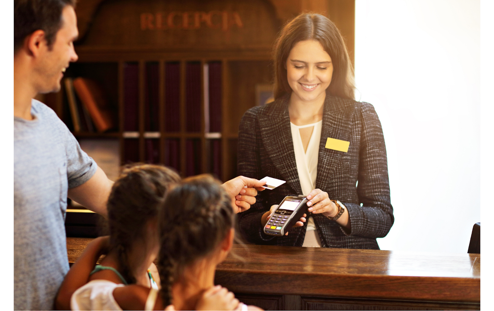

The Online Hotel Receptionist Course
The Online Hotel Receptionist training course is divided into six modules. These modules are devoted to introducing the role of a hotel receptionist and the key personal attributes required for this role. Students will also learn how to manage a workstation and maintain orderliness. The course also discusses the importance of a professional attitude. This is a necessary skill for a front desk job, and the online training can help you develop these skills.
The Hotel Receptionist course will teach you customer service and standard hotel procedures. You will learn how to deal with difficult guests. In addition, you'll develop your interpersonal skills. You'll also learn how to handle a telephone, as well as the reservation process. You'll develop your confidence in this position and become a valued employee in a hotel. After completing the course, you'll be able to begin applying for jobs in the hotel industry. Curso de Recepcionista de Hotel Online

Choosing an Online Hotel Receptionist training course is a smart move if you're interested in a rewarding career in hospitality. The pay is excellent and there's room for growth. Whether you're looking for a new job or are looking for an exciting change, the online course will provide you with all of the information you need to get started on your career path. It will also give you a greater understanding of the hotel industry, how to market yourself to potential employers, and what to expect from a hotel.
When it comes to hiring, the right training is essential. The job description for an hotel receptionist is unique and varies from one hotel to another. Regardless of the size of the hotel or the number of rooms, it's important to make a great first impression and impress customers. With the right education, you'll soon be a valuable part of a hotel's team. There's no better way to make a great impression than to be a professional.
An online Hotel Receptionist training course is a great investment for those seeking a career in hospitality. You can learn all the necessary skills in a convenient format. You can study from any device. The modules are accessible from all major platforms. The online course will also allow you to study from anywhere, using any device. There's no need to leave the house or pay for a training session if you're not satisfied.
The online Hotel Receptionist training course is an excellent choice for students who want to earn a diploma in the hotel industry. The course will teach you how to greet guests and process reservations. It will also teach you how to build a positive relationship with customers and provide exceptional service. You can also learn how to work with different types of people and interact with different cultures. It's essential to have a high level of communication skills, and you can develop these skills in your hotel reception job.
The Online Hotel Receptionist training course should also include a foundation for language and culture. It will teach you the proper nuances of the industry, and it will teach you the right vocabulary to work at a hotel reception. The online hotel receptionist training course will also teach you the fundamentals of English grammar, pronunciation, and greeting. It is recommended that you learn the language well before starting your new job in the hotel industry.
The Online Hotel Receptionist training course is designed for both beginners and experienced professionals. Regardless of the type of background, this course will teach you all the necessary skills and knowledge required for a successful career in this industry. With this advanced course, you'll learn about the systems and processes in a hotel. This will ensure that you're equipped with the knowledge needed to perform the job. The online training will prepare you for any position in the hotel. Curso de Recepcionista de Hotel Online
The Online Hotel Receptionist training course will be helpful in preparing you for a hotel receptionist job. The course will teach you all of the necessary skills and techniques to be a successful hotel receptionist. The courses will be convenient for you. The learning material of the course is designed for people who have busy schedules. The online Hotel Receptionist training is offered on both desktop computers and Apple Macs.